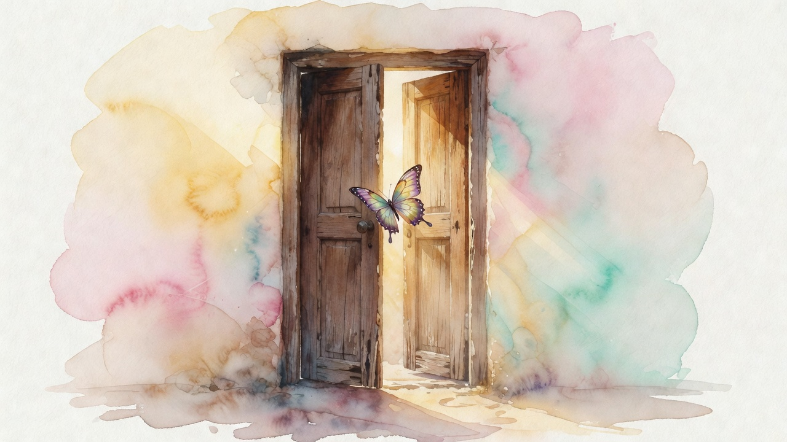
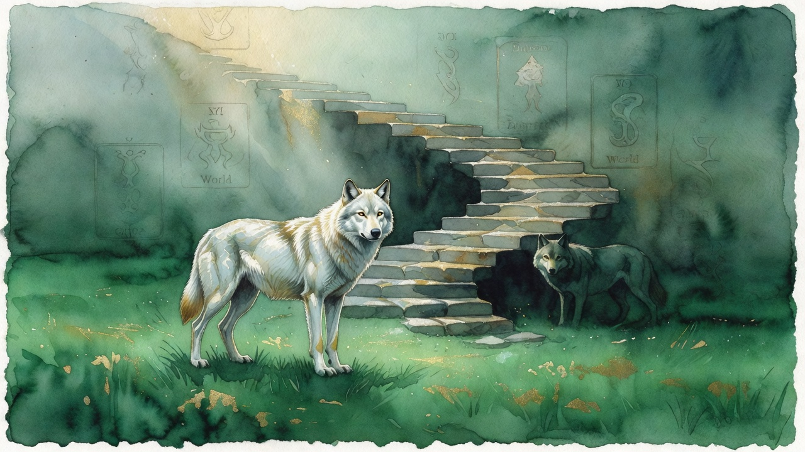

Qué es PsicopoMPoWhat Psychopomp is
PsicopoMPo es un dispositivo de exploración simbólica: articula el campo sonoro del Harmonic Beacon, la Proyección del Mito Personal y funciones de IA para acompañar el diálogo con las imágenes, escenas y roles que trae cada persona.Psychopomp is a symbolic exploration system combining the Harmonic Beacon sound field, Personal Myth Projection and AI functions to accompany a dialogue with each person's own images, scenes and roles.
La Proyección del Mito Personal, desarrollada por Julián De La Reta a lo largo de más de quince años de práctica, reúne recursos del psicodrama, la imaginación activa y las funciones del mito. PsicopoMPo busca facilitar el trabajo con las propias escenas y desarrollar recursos que puedan retomarse en el encuentro humano.Julián De La Reta developed Personal Myth Projection through more than fifteen years of practice. It combines psychodramatic tools, active imagination and the functions of myth. Psychopomp aims to support work with one's own scenes and resources that can be revisited in human encounters.
Qué aporta el BeaconThe role of Beacon
El Beacon sostiene un campo de tonos, armónicos y resonancias basado en relaciones proporcionales. La escucha forma parte del encuadre del recorrido interior. Lo llamamos un guardarraíl sonoro: una referencia de acompañamiento mientras la atención se abre a sensaciones e imágenes, sin atribuirle un efecto idéntico en todas las personas.Beacon sustains a field of tones, harmonics and resonances based on proportional relationships. Listening is part of the frame for the inner journey. We describe it as a sonic guardrail: an accompanying reference as attention opens to sensations and images, without assuming the same effect for everyone.
Cómo se recorre la experienciaThe course of the experience
- Preparación: conocés la propuesta y acordás con el equipo cómo participar.Preparation: learn about the proposal and agree with the team on how to participate.
- Exploración: escuchás el campo sonoro y relatás lo que aparece, hablando o escribiendo. La guía acompaña el intercambio.Exploration: listen to the sound field and describe what emerges, through speech or text, with the guide accompanying the exchange.
- Regreso: el recorrido incluye la vuelta al cuerpo y al espacio compartido.Return: the journey includes returning attention to the body and the shared space.
- Integración: las escenas y preguntas pueden retomarse en un espacio de trabajo acompañado por un psicodramatista, en el encuadre acordado.Integration: scenes and questions can be revisited in a space facilitated by a psychodramatist, within the agreed frame.
Qué hace la IAWhat the AI does
Las responsabilidades están separadas. Un programa organiza las etapas y las transiciones del protocolo. Funciones especializadas colaboran en las decisiones y en la formulación de las intervenciones; otras convierten voz en texto y dan voz a las respuestas. Las salidas se comprueban antes de presentarlas.Responsibilities are separated. A program organizes protocol stages and transitions. Specialized functions contribute to decisions and the wording of interventions; others transcribe speech or voice the responses. Outputs are checked before being presented.
Después del cierre, el relato puede ponerse en relación con fuentes míticas y simbólicas para elaborar una devolución revisable. Si se solicita, una imagen puede ilustrar esa elaboración. La IA participa en este sistema junto al método, el sonido y las personas.After closure, the account can be explored alongside mythic and symbolic sources to prepare a reviewable reflection. An optional image can illustrate that work. AI is one component alongside the method, the sound and the people involved.
Ver la documentación técnica →Explore the technical documentation →Un trabajo que viene de los encuentrosWork rooted in human encounters
La investigación en curso combina experiencias individuales con PsicopoMPo y una reunión semanal de integración. En esos encuentros, las personas comparten lo vivido y trabajan con psicodrama escenas que surgieron durante los viajes.The ongoing research combines individual Psychopomp experiences with a weekly integration meeting. Participants share what they experienced and use psychodrama to work with scenes that emerged during their journeys.
El papel del psicodramatistaThe psychodramatist's role
El acompañamiento humano es central en este proceso. El psicodramatista sostiene el encuadre, cuida los tiempos y acompaña el trabajo con el cuerpo, las escenas y los cambios de roles. Junto con la persona y el grupo, ayuda a elaborar lo vivido y a explorar cómo integrarlo en la vida cotidiana.Human facilitation is central to this process. The psychodramatist holds the frame, attends to pacing and facilitates work with the body, scenes and role reversal. Together with the participant and the group, they help work through the experience and explore how to integrate it into everyday life.
Qué relataron las personasWhat participants described
En los cuestionarios de seguimiento aparecen relatos de:Follow-up questionnaires include accounts of:
- Confianza y sostén al compartir las escenas dentro de un grupo acompañado.Trust and support when sharing scenes within a facilitated group.
- Nuevas perspectivas al representar una escena y experimentar otros roles, también al participar en el trabajo de otra persona.New perspectives through enacting scenes and exploring other roles, including through another participant's work.
- Recorridos diversos: junto con alivio y apertura, aparecen cansancio, tristeza, dificultades técnicas y temas que necesitan más acompañamiento.Varied experiences: alongside relief and openness, participants describe fatigue, sadness, technical difficulties and issues needing further support.
Síntesis de relatos recogidos en el seguimiento del grupo, sin datos identificatorios. Son experiencias personales de una investigación en curso.A synthesis of the group's follow-up accounts, with identifying details omitted. These are personal experiences within ongoing research.
Imágenes de los viajesImages from the journeys
Las escenas aparecen en la experiencia de cada persona. Las imágenes elaboradas después son interpretaciones visuales abiertas, no una representación literal ni una lectura definitiva de su sentido.Scenes emerge in each person's experience. Images created afterwards are open visual interpretations, not literal representations or definitive readings of their meaning.


Estado del proyectoProject status
PsicopoMPo es un prototipo de investigación en desarrollo. Estamos trabajando en la calidad de las intervenciones, los tiempos de la conversación, la voz y las devoluciones simbólicas. Las pruebas se coordinan con el equipo. La experiencia y sus resultados no se presentan como una eficacia clínica demostrada.Psychopomp is a research prototype in development. Work continues on intervention quality, conversational timing, voice and symbolic reflections. Trials are arranged with the team. The experience and its results are not presented as demonstrated clinical efficacy.
Las devoluciones requieren revisión y elaboración en el encuadre acordado; no constituyen un diagnóstico.Reflections require review and further work within the agreed frame; they do not constitute a diagnosis.
Equipo y fuentesTeam and sources
Mariano Fernández Méndez · Nicolás Echániz · Julián De La Reta · Anabella Scigliano Mattiauda · Saira Asúa · Federico Bonino.
Síntesis del póster PsicopoMPo presentado para el Congreso 2026, la documentación del proyecto y los cuestionarios de seguimiento del grupo de investigación, consultados el 14 de noviembre de 2026. Los antecedentes públicos de Beacon/PMP y los ejemplos técnicos se distinguen del trabajo específico con participantes.Based on the Psychopomp poster for the 2026 Congress, project documentation and the research group's follow-up questionnaires, consulted on 14 November 2026. Public Beacon/PMP antecedents and technical examples are distinguished from the specific work with participants.